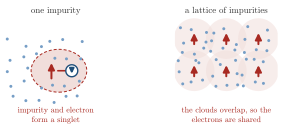

Page 9 of 11 of this session
8.11 From a single Kondo impurity to the Kondo lattice
What does a local magnetic moment do inside a metal, and what changes when there is one on every site? We will see that a single moment forms a singlet with a conduction electron close to it. In a lattice of moments the conduction electrons that screen them are shared between the singlets.
Now that we have the method for quantum spin liquids, we move to a second physical system, which is quite different but which can be solved with the same method. This is the Kondo lattice model, which appears whenever a metal and a correlated system of local moments exist together.
Let us start with the simplest case, which is a single spin-\(1/2\) magnetic impurity in a non-interacting two-dimensional electron gas. The total Hamiltonian has a free kinetic term for the conduction electrons, with the sign of the hopping of (1.6). It also has a Heisenberg-like coupling between the spin of the impurity and the local spin density of the conduction electrons at the impurity site,
\[H = -t\sum_{\langle ij\rangle,\sigma}\Big(c^\dagger_{i\sigma}c_{j\sigma} + \text{h.c.}\Big) + H_K, \qquad H_K = J_K\sum_{\alpha\beta}\Big(c^\dagger_{0\beta}\,\boldsymbol\sigma_{\beta\alpha}\, c_{0\alpha}\Big)\cdot \mathbf S, \tag{8.17}\]
where \(H_K\) is the Kondo coupling. To solve this problem exactly is hard. However, we can describe the ground state in a simple way, even without the full solution. The spin of the impurity forms a singlet, which has the same structure as (8.3), with an effective conduction electron close to it,
\[|GS\rangle \sim \frac{1}{\sqrt2}\Big(|{\Uparrow\downarrow}\rangle - |{\Downarrow\uparrow}\rangle\Big),\]
and the rest of the electron gas behaves as a Fermi sea without interactions. This is a good approximation to the many-body ground state. The resulting state has total spin zero and does not break time-reversal symmetry, so even if it has a real local moment, it is already a quantum magnet in the sense of Section 8.1.
Let us now generalize this to a whole lattice of magnetic impurities, with one impurity per site, where each impurity is coupled to the same bath of conduction electrons.
A lattice of impurity spins \(\mathbf S_j\), one on every site \(j\), each coupled to the conduction electrons of its own site, is the Kondo lattice,
\[H = -t\sum_{\langle ij\rangle,\sigma}\Big(c^\dagger_{i\sigma}c_{j\sigma} + \text{h.c.}\Big) + J_K\sum_{j,\alpha\beta}\Big(c^\dagger_{j\beta}\,\boldsymbol\sigma_{\beta\alpha}\,c_{j\alpha}\Big)\cdot \mathbf S_j. \tag{8.18}\]
For \(J_K>0\) each impurity tends to bind a conduction electron into a singlet. The same conduction electrons screen many impurities, so the screening is shared between them.
Every impurity again tends to form a singlet with a conduction electron close to it. Since many impurities compete for the same sea of electrons, the electrons that screen the impurities are shared, in a fractional way, between the singlets of different impurities. The result is a state with a large entanglement over the whole lattice, between all the magnetic sites and the electron gas, while the total spin stays zero. Schematic 8.10 sketches the two cases.

Notebook check-in: session8.ipynb, “Magnetization of a large Heisenberg model with a magnetic impurity” (Challenge) and “Magnetization of a dimerized Heisenberg model with a magnetic impurity” (Challenge)
These exercises show, numerically and in real space, how the local field of a single magnetic impurity decays with the distance in a quantum magnet that is otherwise gapless or dimerized. The gapless chain shows an algebraic and staggered decay, which follows the correlation profile of a critical spin liquid. The dimerized chain of Section 8.5, which is a valence bond solid, shows instead an exponential decay over a finite correlation length, because its ground state is gapped. This is the same physics of the screening cloud as in (8.17), seen from the side of a single chain in real space and not from the side of itinerant electrons.
8.12 Solving the Kondo lattice with the parton method and a hybridization
How do we solve a lattice of impurity spins that are coupled to a metal? We write every spin with the Abrikosov fermions of Section 8.8 and decouple the Kondo term in mean field. We arrive at a bilinear Hamiltonian, (8.21), in which the conduction electrons hybridize with the \(f\) fermions.
\[\mathbf S_i = \frac12 \sum_{\alpha\beta} f_{i\alpha}^\dagger\, \boldsymbol\sigma_{\alpha\beta}\, f_{i\beta}, \tag{8.10}\]
\[\sum_\sigma f_{i\sigma}^\dagger f_{i\sigma} = 1 \qquad \text{at every site } i. \tag{8.11}\]
These are the Abrikosov fermions of Section 8.8. A spin one half on site \(i\) is written with two fermions \(f_{i\uparrow}\) and \(f_{i\downarrow}\), and \(\boldsymbol\sigma\) is the vector of Pauli matrices. The constraint keeps one fermion on every site, so that the four states of the two fermions reduce to the two states of the spin.
We solve this problem in the same way as we solved the QSL in Section 8.8. We replace every impurity spin by an Abrikosov fermion, \(\mathbf S_j = \tfrac12 f_{j\alpha}^\dagger \boldsymbol\sigma_{\alpha\beta} f_{j\beta}\), with the same single-occupancy constraint (8.11), and we write the spin here in the equivalent traceless form
\[S_{\alpha\beta}(j) = f^\dagger_{j\alpha}f_{j\beta} - \frac{n_f(j)}{2}\delta_{\alpha\beta}. \tag{8.19}\]
When we insert this into (8.18), the Kondo coupling becomes a real quartic interaction. Now it does not couple the auxiliary \(f\) fermions to the \(f\) fermion of another site, as in (8.13), but to the real conduction electrons \(c_{j\sigma}\) on the same site,
\[H \sim \sum_{\mathbf k\alpha} \varepsilon_{\mathbf k}\, c^\dagger_{\mathbf k\alpha}c_{\mathbf k\alpha} \;-\; J_K\sum_{j,\alpha\beta}\Big(c^\dagger_{j\beta}f_{j\beta}\Big)\Big(f^\dagger_{j\alpha} c_{j\alpha}\Big). \tag{8.20}\]
As in (8.14), we decouple this quartic term at the mean-field level, with the expectation value \(\langle c^\dagger_j f_j\rangle\), and we do a Fourier transform to momentum space. This gives a bilinear Hamiltonian that mixes real electrons and auxiliary fermions.
The mean-field Hamiltonian of the Kondo lattice is
\[H \sim \sum_{\mathbf k\alpha} \varepsilon_{\mathbf k}\, c^\dagger_{\mathbf k\alpha} c_{\mathbf k\alpha} \;-\; \gamma_K \sum_{\mathbf k,\alpha} f^\dagger_{\mathbf k\alpha}c_{\mathbf k\alpha} + \text{h.c.}, \tag{8.21}\]
where \(\varepsilon_{\mathbf k}\) is the conduction band dispersion and \(\gamma_K\) is the Kondo hybridization. It is bilinear, and for every \(\mathbf k\) and spin it mixes one conduction electron with one \(f\) fermion, with the strength \(\gamma_K=J_K\langle\sum_\sigma c^\dagger_{j\sigma}f_{j\sigma}\rangle\) that we find self-consistently.
The hybridization is the only mean-field parameter, it is determined self-consistently, and it contains all the information about the strength of the original Kondo coupling \(J_K\). This holds when the \(f\) level stays at zero, as for a half-filled conduction band that is symmetric around zero. For another band or another filling the constraint (8.11), imposed on average, adds the energy of the \(f\) level as a second mean-field parameter.
The steps From the Kondo lattice (8.18) to the hybridization (8.21)
The algebra happens on one site, so let us take one site and drop its index \(j\). We write the spin with (8.10), \(\mathbf S=\tfrac12 f^\dagger_\gamma\boldsymbol\sigma_{\gamma\delta}f_\delta\), with a sum over every repeated spin index. The Kondo term of (8.18) on the site is then
\[J_K\big(c^\dagger_\beta\boldsymbol\sigma_{\beta\alpha}c_\alpha\big)\cdot\mathbf S=\frac{J_K}{2}\sum_{a=x,y,z}\sigma^a_{\beta\alpha}\sigma^a_{\gamma\delta}\,c^\dagger_\beta c_\alpha f^\dagger_\gamma f_\delta.\]
The Pauli matrices obey the Fierz identity of Section 8.8,
\[\sum_{a=x,y,z}\sigma^a_{\beta\alpha}\sigma^a_{\gamma\delta}=2\,\delta_{\beta\delta}\delta_{\alpha\gamma}-\delta_{\beta\alpha}\delta_{\gamma\delta},\]
so the Kondo term is
\[J_K\,c^\dagger_\beta c_\alpha f^\dagger_\alpha f_\beta-\frac{J_K}{2}\,n_cn_f,\]
with \(n_c=c^\dagger_\alpha c_\alpha\) and \(n_f=f^\dagger_\alpha f_\alpha\) on the site. We now bring each \(c^\dagger\) next to an \(f\). The anticommutator \(f_\beta f^\dagger_\alpha=\delta_{\alpha\beta}-f^\dagger_\alpha f_\beta\) gives one more term, and moving \(c_\alpha\) past two fermion operators gives no sign, so that
\[c^\dagger_\beta c_\alpha f^\dagger_\alpha f_\beta=n_c-\big(c^\dagger_\beta f_\beta\big)\big(f^\dagger_\alpha c_\alpha\big).\]
With one \(f\) fermion on the site, \(n_f=1\) from (8.11), the Kondo term becomes
\[-J_K\big(c^\dagger_\beta f_\beta\big)\big(f^\dagger_\alpha c_\alpha\big)+\frac{J_K}{2}\,n_c.\]
The first term is the quartic term of (8.20). The second one is a potential \(J_K/2\) for the conduction electrons on every site, which only shifts their chemical potential, and the \(\sim\) of (8.20) leaves it out.
The decoupling follows (8.14). We write \(A_j=\sum_\alpha f^\dagger_{j\alpha}c_{j\alpha}\), so that the quartic term is \(-J_KA_j^\dagger A_j\), and
\[A_j^\dagger A_j\approx\langle A_j^\dagger\rangle A_j+A_j^\dagger\langle A_j\rangle-|\langle A_j\rangle|^2.\]
We call \(\gamma_K=J_K\langle A_j^\dagger\rangle=J_K\langle\sum_\sigma c^\dagger_{j\sigma}f_{j\sigma}\rangle\), the same on every site, and we get
\[-J_KA_j^\dagger A_j\approx-\gamma_K\sum_\alpha f^\dagger_{j\alpha}c_{j\alpha}-\gamma_K^*\sum_\alpha c^\dagger_{j\alpha}f_{j\alpha}+\frac{|\gamma_K|^2}{J_K}.\]
Both operators sit on the same site, so the sum over the sites of \(f^\dagger_{j\alpha}c_{j\alpha}\) is \(\sum_{\mathbf k}f^\dagger_{\mathbf k\alpha}c_{\mathbf k\alpha}\). This is (8.21), up to the constant \(|\gamma_K|^2/J_K\) per site. The sign of \(\gamma_K\) is a gauge choice, since \(f\to-f\) changes it and leaves the bands the same.
As a check with a number, we take the half-filled chain with \(t=1\) and \(J_K=0.8\). The energy of the filled bands of (8.21), plus \(\gamma_K^2/J_K\) per site, is lowest at \(\gamma_K=0.527\). The filled states give \(J_K\langle\sum_\sigma c^\dagger_\sigma f_\sigma\rangle=0.527\) too, with the same sign.

The Kondo lattice couples an impurity spin on each site to the conduction electrons,
\[H_K=J_K\sum_{j,\alpha\beta}\Big(c^\dagger_{j\beta}\,\boldsymbol\sigma_{\beta\alpha}\,c_{j\alpha}\Big)\cdot\mathbf S_j,\qquad J_K>0.\]
Each impurity wants a singlet with a conduction electron close to it. What happens when there are many impurities?
Show the answers
- A. ✓ True
This is true. At half filling or below, the number of conduction electrons is not larger than the number of impurities, and all impurities draw from the same sea. The singlets are then fractional and entangled over the lattice.
- B. ✗ False
This is false. The Kondo coupling does not create electrons. With \(0.5\) conduction electrons per site, only half of the impurities could get one, and the density stays \(0.5\).
- C. ✗ False
This is false. At half filling the \(f\) fermions hybridize with the conduction band. This opens a direct gap \(2\gamma_K\) at the crossing, and the Fermi level lies in the smaller gap between the two bands, as in the Kondo insulator. Decoupled impurities could not do this.
A Kondo lattice in mean field has the Hamiltonian
\[H=\sum_{\mathbf k\alpha}\varepsilon_{\mathbf k}\,c^\dagger_{\mathbf k\alpha}c_{\mathbf k\alpha}-\gamma_K\sum_{\mathbf k\alpha}f^\dagger_{\mathbf k\alpha}c_{\mathbf k\alpha}+\text{h.c.}\]
Here \(c\) are the conduction electrons, with the band \(\varepsilon_{\mathbf k}\). The \(f\) are the fermions of the impurity spins, and \(\gamma_K\) is the hybridization. With \(\gamma_K=0\), what is the energy of the \(f\) band?
Show the answers
- A. ✗ False
This is false. The \(f\) fermions have no hopping. At \(\mathbf k\) with \(\varepsilon_{\mathbf k}=2\), say, the conduction band is at \(2\) and the \(f\) level is still at \(0\).
- B. ✓ True
This is true. The auxiliary fermions have no hopping of their own, and the only term that involves them is the hybridization. Without it their levels sit at zero energy, which is the chemical potential of the constraint when the conduction band is half filled and symmetric around zero.
- C. ✗ False
This is false. The constraint asks for one \(f\) fermion on each site, so there are \(N\) of them for \(N\) sites. They are still in the Hamiltonian, at energy zero.
The \(f\) fermions write the impurity spins, and \(c\) are the conduction electrons. The conduction band is \(\varepsilon_{\mathbf k}\), and \(\gamma_K\) is the hybridization. The Kondo coupling is \(J_K\). Which term puts \(c\) and \(f\) into the same bands?
Show the answers
- A. ✓ True
This is true. It moves an electron from \(c\) to \(f\) at the same \(\mathbf k\), so \(n_c\) and \(n_f\) are no longer conserved apart. For every \(\mathbf k\) and spin it is the entry \(-\gamma_K\) of a \(2\times2\) matrix, and at the crossing it splits the two levels into \(\pm\gamma_K\).
- B. ✗ False
This is false. It acts on the conduction electrons alone. With only this term, a \(\mathbf k\) with \(\varepsilon_{\mathbf k}=2\) has a conduction electron at \(2\) and the \(f\) level at \(0\), and the two do not mix.
- C. ✗ False
This is false. This quartic term moves an electron from \(c\) to \(f\) and back on the same site, so it keeps \(n_c\) and \(n_f\). On a site with one conduction electron and one \(f\) fermion both numbers stay \(1\). Only its mean-field decoupling gives a term that mixes the bands.
Take one impurity spin \(\mathbf S\) and one conduction electron on the same site, with the Kondo term of (8.17), \(H_K=J_K\big(c^\dagger\boldsymbol\sigma c\big)\cdot\mathbf S\). Write \(H_K\) with the spin \(\mathbf s=\tfrac12c^\dagger\boldsymbol\sigma c\) of the electron, and find its levels with their degeneracies. Which level is the ground state for \(J_K>0\)?
Solution
Since \(c^\dagger\boldsymbol\sigma c=2\mathbf s\), the coupling is \(H_K=2J_K\,\mathbf s\cdot\mathbf S\). This is the Heisenberg dimer with \(J=2J_K\), so the algebra is the one of the singlet (8.3). With the total spin \(\mathbf S_\text{tot}=\mathbf s+\mathbf S\) we have
\[\mathbf s\cdot\mathbf S=\frac12\Big(\mathbf S_\text{tot}^2-\mathbf s^2-\mathbf S^2\Big)=\frac12\Big(S_\text{tot}(S_\text{tot}+1)-\frac32\Big),\]
since \(\mathbf s^2=\mathbf S^2=3/4\). For \(S_\text{tot}=0\) this is \(-3/4\), and for \(S_\text{tot}=1\) it is \(+1/4\). So the singlet is at \(-3J_K/2\), once, and the triplet is at \(+J_K/2\), three times, with the gap \(2J_K\) between them. For \(J_K>0\) the ground state is the singlet, which is the bound state of the impurity and the electron of Section 8.11.
The factor two matters when we compare with a formula or a code written for \(J\,\mathbf s\cdot\mathbf S\), which needs \(J=2J_K\). The KondoLatticeHamiltonian of pyqula is such a code. With its coupling set to \(2J_K\) it gives the same \(\gamma_K\) as the decoupling above, \(0.527\) for \(J_K=0.8\) on the half-filled chain.
Try it. Run the three values of JK and follow the flat band. Check that the crossing with the conduction band is replaced by a gap, and that the gap grows from JK=0.25 to JK=0.5, where JK is the hybridization \(\gamma_K\) of (8.21). Then change add_onsite(-2.0) and see if the gap stays at the Fermi level.
- In Section 8.13 the hybridization \(\gamma_K\) of (8.21) opens a gap at the crossing with the flat band, and the metal becomes a Kondo insulator.
- In Section 9.3 the Kondo effect is an example where linear response fails, since the Kondo temperature has an essential singularity in the coupling.
- In Section 9.9 the screening of a single magnetic impurity comes back inside a quantum magnet, with spinons in place of conduction electrons.